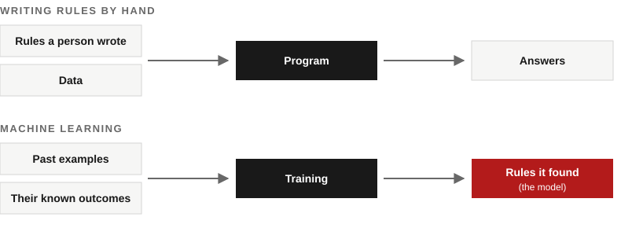
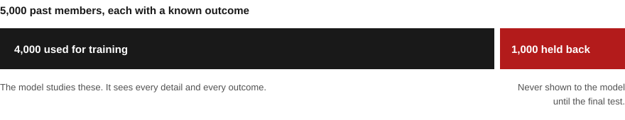
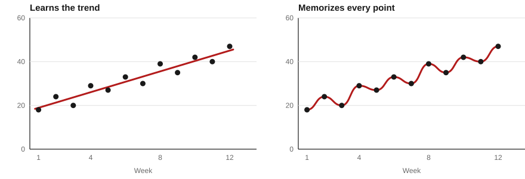

Sorting into categories.
Will this member cancel this month, yes or no? Is this card payment fraud? Which team should handle this support ticket? This is called classification.
How machine learning actually works, how to tell whether a model is any good, and which questions to ask before anyone trusts one.
Most of the AI that companies rely on every day isn't a chatbot. It's the model that flags a suspicious card payment, estimates when your package will arrive, decides which emails land in spam, and guesses how many people will show up to Saturday's spin class. These are machine learning models, and many of them were trained on nothing more exotic than a spreadsheet of past records.
You don't need to build one to work with one. But you do need to understand what it learned from, what it can't see, and what a number like "94% accurate" actually means. Clients will bring you models like these, ask whether to buy one, or ask you to recommend one. This lesson gives you enough to ask the right questions.
We'll follow one example the whole way through: Ridgeline Fitness, a made-up gym with about 2,400 members that wants to know who's about to cancel.
Instead of writing the rules yourself, you show the computer examples and let it work out the rules.
Say Ridgeline wants a list of members who might cancel soon. One way is to write the rule yourself: flag anyone who hasn't visited in three weeks. That's a perfectly good rule, and sometimes it's all you need. But it ignores everything else you know. Someone on an annual contract who skipped three weeks isn't going anywhere until the contract ends. Someone who used to come five times a week and now comes twice might be on the way out, even though they still show up.
Machine learning takes the other route. You give it thousands of past examples where you already know how things turned out, and it finds the patterns that separate one outcome from another. The result of that process is called a model. You then use the model on new cases, where you don't know the outcome yet, and it gives you a prediction.

Here's a small slice of Ridgeline's records. Each row is one member at the start of a month. The last column is what happened by the end of that month.
| Member | Visits, last 30 days | Change from month before | Months as a member | Plan | Missed a payment (last 60 days) | Cancelled that month? |
|---|---|---|---|---|---|---|
| A-1027 | 14 | +2 | 26 | Annual | No | No |
| A-1388 | 2 | −9 | 4 | Monthly | No | Yes |
| A-1412 | 9 | −1 | 11 | Monthly | No | No |
| A-1590 | 1 | −6 | 7 | Monthly | Yes | Yes |
| A-1633 | 11 | +4 | 3 | Monthly | No | No |
| A-1871 | 4 | −7 | 15 | Monthly | No | Yes |
| A-1902 | 0 | −3 | 31 | Annual | No | No |
| A-2045 | 6 | 0 | 2 | Monthly | Yes | No |
Two pieces of vocabulary come up constantly. The columns the model gets to look at are called features. The column it's trying to predict is the label. Here, the features are visits, the change in visits, months as a member, plan type, and missed payments. The label is whether the member cancelled.
Look down the table and you can probably spot a pattern already: members whose visits dropped sharply and who are on a monthly plan cancelled. A model does the same thing across thousands of rows, and it notices combinations a person would miss. It would also pick up something less obvious from member A-1902: annual members rarely cancel mid-year, even after they stop coming, because they're locked into a contract. That member is still a risk. Just not this month.
Will this member cancel this month, yes or no? Is this card payment fraud? Which team should handle this support ticket? This is called classification.
How many people will sign up for Saturday's spin class? What will this house sell for? How many cases of oat milk will the store need next week? This is called regression.
Which members behave alike? Ridgeline might discover it has early-morning regulars, weekend-only members, and people who mostly come for classes, without anyone labeling them first. This is called clustering.
The first two need labeled examples, where you already know the answer for past cases. That's called supervised learning, and it's what most business models use. Clustering works without labels, which is why it's called unsupervised learning.
A model that has only been graded on its practice questions hasn't really been tested.
Ridgeline has records on 5,000 past members and knows whether each one cancelled. The tempting move is to train a model on all 5,000 and then check how well it does on those same members. It will look excellent, and it will tell you almost nothing, because the model has already seen the answers.
So before training starts, you set some records aside. The model learns from the rest and never sees the held-back records until the very end. Then you test it on them. That score is the one that counts, because it's the closest thing you have to how the model will do on next month's members.

Picture two students preparing for an exam using last year's practice test. One works out why each answer is right. The other memorizes the answer key. On the practice test, the memorizer does better. On the real exam, with new questions, the first student wins easily.
Models can do either. A model that's too simple misses real patterns. A model that's too flexible starts treating noise as signal: it notices that three members who joined on a rainy Tuesday in March all cancelled, and decides that means something. That's called overfitting, and it's the most common reason a model looks great in a demo and disappoints in real use.

Here's how that played out when Ridgeline compared two models. Each one was checked twice: on 1,000 members it had trained on, and on the 1,000 members held back. Each group included 50 people who cancelled. Both models made a list of the 100 members they considered most likely to cancel, and we counted how many real cancellations made the list.
| Model | Members it trained on | Members it never saw |
|---|---|---|
| The memorizer | 50 of 50 caught | 18 of 50 caught |
| The learner | 40 of 50 caught | 37 of 50 caught |
On familiar members, the memorizer is perfect. On new members, it catches barely a third of the people who left. The learner gives up a little on data it has seen and holds up on data it hasn't. A big gap between those two columns is the warning sign to look for.
This short video explains the same idea with a different example. "Bias" is roughly what we called too simple, and "variance" is roughly memorizing.
Choosing the columns is where most of the judgment in a machine learning project lives.
The model doesn't know anything about gyms. It only knows the columns in its training data. Pick useful ones and it has a fair shot. Leave out the thing that actually drives cancellations and no amount of clever math will find it. Include the wrong thing and it can look brilliant for the wrong reason.
Three kinds of mistakes come up again and again:
A column that only gets filled in once the outcome has already happened, like the date someone's account was closed. The model learns to read the answer instead of predicting it. It scores beautifully in testing and is useless in real life, because that column is always empty for current members.
A member ID number, for example. It can even seem to help, because IDs were handed out in order and so they quietly track how long someone has been a member. If that's the useful part, use months as a member directly.
Age, gender, ZIP code, and anything that stands in for them. A model will happily use whatever predicts the label, including things you'd never be comfortable basing a decision on. ZIP code is a common trap, because in many places it closely tracks income and race.
Ridgeline's data team has a list of possible columns. For each one, decide what kind it is.
Useful
One of the strongest signals. People usually stop coming before they stop paying.
Useful
A drop matters more than the level. Someone going from 12 visits to 3 is a bigger worry than someone who has always come 3 times.
Useful
Annual members can't easily cancel mid-contract, so the same low attendance means something different on each plan.
Leaks the answer
By the time this is filled in, the member has already decided. A model that relies on it looks nearly perfect in testing and only flags people once it's too late to do anything.
No real signal
IDs are handed out in order, so at best they're a rough stand-in for how long someone has been a member. Use months as a member instead, which says the same thing directly.
Useful
A failed card often comes right before a cancellation, and the gym knows about it in advance, so the model can actually use it.
Handle with care
It might help a little, because people who live farther away tend to visit less. But it can also stand in for income or race. If distance is the useful part, use distance to the gym instead, and check whether the model treats neighborhoods differently.
Handle with care
It may line up with cancellations, but deciding who gets attention based on age can be unfair, and in some uses, like hiring or lending, illegal. Ask whether the decision should depend on it at all.
The best features tend to be things the business already records and that make sense to a person. If you can't explain why a column would matter, be suspicious when the model says it does.
When the thing you're looking for is rare, "how often is it right?" is the wrong question.
In a typical month, about 5% of Ridgeline's members cancel. That's 50 out of every 1,000. Now picture a model that predicts nobody will ever cancel. It's right about the 950 who stay and wrong about the 50 who leave, so it's 95% accurate. It's also completely useless. It never flags anyone.
This happens whenever the thing you care about is rare: fraud, equipment failures, customers about to leave, a disease in a screening test. A high accuracy number means very little until you know how common the outcome is.
Every prediction lands in one of four boxes. Here's how they look when Ridgeline's model picks 20 members to call this week out of 1,000, and 50 of those 1,000 are about to cancel.
We called them, and they really were about to leave.
We didn't call them, and they left.
We called them, but they were going to stay.
We didn't call them, and they stayed.
Two questions matter far more than accuracy here:
The front desk can only make so many calls. Change the length of the list and watch what happens.
| Calls | Caught | False alarms | Missed | Accuracy | Called who were leaving | Leavers reached | What it means |
|---|---|---|---|---|---|---|---|
| 10 | 8 | 2 | 42 | 95.6% | 80% | 16% | Almost every call is worth making, but 42 people who are about to leave never hear from you. |
| 20 | 14 | 6 | 36 | 95.8% | 70% | 28% | This is about what the front desk can handle in a week. Most calls are useful, and you reach about a quarter of the people at risk. |
| 50 | 27 | 23 | 23 | 95.4% | 54% | 54% | You now reach about half the people who would leave, but almost half your calls go to members who were staying anyway. |
| 100 | 37 | 63 | 13 | 92.4% | 37% | 74% | Most people at risk get a call. Accuracy has dropped, but if each member you keep is worth a lot, this may be the better list. |
| 200 | 45 | 155 | 5 | 84.0% | 22% | 90% | You miss almost no one, but most calls go to happy members. That costs staff time, and it could annoy people who had no plans to leave. |
This is about what the front desk can handle in a week. Most calls are useful, and you reach about a quarter of the people at risk.
Look at the accuracy column. It's highest at 20 calls and lowest at 200, yet the 200-call list reaches far more of the people Ridgeline is trying to keep. There's no single right length. It depends on what a call costs, what a lost member costs, and how many calls the staff can actually make. That's a business decision, and it's exactly the kind a consultant helps a client make.
The four boxes above have a formal name: the confusion matrix. This video shows how to read one. It uses a medical example, but the logic is the same.
Most machine learning failures aren't bugs in the math. They come from the data and from the world changing around it.
In 2018, Reuters reported that Amazon had abandoned an experimental tool that rated job applicants from one to five stars. It had been trained on ten years of résumés, most of them from men, and it learned to mark down résumés that included the word "women's," as in "women's chess club captain." Nobody told it to do that. It found a pattern in past hiring and repeated it. People familiar with the project said recruiters looked at its rankings but never relied on them alone.
Read the Reuters report ↗A model assumes tomorrow looks like the data it learned from. Zillow ran a business that bought houses based on its own price estimates and then resold them. In 2021, home prices became much harder to predict, and Zillow ended up paying more for homes than it could sell them for. It wrote down about $304 million of inventory in a single quarter, shut the business down, and cut about a quarter of its staff. Ridgeline could see a smaller version of the same thing: a new gym opens across the street, and last year's patterns stop holding.
Zillow's November 2021 filing ↗Suppose Ridgeline's model shows that members who take spin classes rarely cancel. It's tempting to push everyone into spin. But the likelier story is that committed members are the ones who sign up for classes in the first place. The model found something that predicts loyalty, not something that creates it.
Once the front desk starts calling at-risk members and some of them stay, next year's records will show those people as members who didn't cancel. Train a new model on that data without accounting for the calls, and it may decide people like them are safe.
None of this means you shouldn't use machine learning. It means a model needs an owner: someone who checks it against new data on a schedule, looks at who it's flagging, and decides when it needs retraining or switching off.
Plenty of problems are better solved by a simple rule, a language model, or a person.
works when the logic is clear and fixed. "Flag any payment that fails twice" doesn't need a model.
works when you have a long history of outcomes in a table and the pattern is too complicated to write down by hand. Forecasts, risk scores, and fraud flags live here.
works when the input is written language: summarizing comments, drafting messages, pulling details out of documents.
is the right call when the decision is high-stakes, rare, or needs accountability and judgment that no data captures.
Most real systems combine them. Ridgeline might use a model to rank members by risk, a language model to draft a check-in message, and a staff member to decide what to offer and make the call.
Machine learning
A number to predict, a long history of outcomes, and patterns like season and time of day that are hard to write down by hand.
A simple rule
The logic is already decided. A rule is cheaper, exact, and easy to explain.
A language model
The input is free text, and summarizing is what language models do well. Someone should still check the summary against a sample of the comments.
A person
This is a serious, rare decision about people's safety. Data can't make it, and someone has to be accountable for it.
Machine learning
Many members, many signals, and thousands of past outcomes to learn from. This is exactly what Ridgeline's model does.
A language model
Drafting a personal message is a language task. Staff should review each draft before it goes out.
Most of the time you won't build the model. You'll decide whether to trust one.
Paste this into any AI chat tool. The AI plays a salesperson pitching a product that predicts gym cancellations. Your job is to find out whether its "97% accurate" claim means anything. Work from the ten questions above.
You are a friendly, confident salesperson for ChurnSense, a made-up product that predicts which gym members will cancel. I'm a consultant evaluating it for a gym with about 2,400 members. Open by saying ChurnSense is "97% accurate" and asking if I have questions. Only reveal these facts if I ask a question that would reasonably lead to them. Never volunteer them: - At the gyms you work with, about 3% of members cancel each month. A model that predicted no cancellations at all would also be 97% accurate. - The 97% figure was measured on the same members the model was trained on, not on new ones. - Of the members who actually cancel, ChurnSense flags about 1 in 4. - One of its strongest inputs is "membership end date entered," which staff fill in after someone has already asked to cancel. - It was trained only on data from large gyms in big cities, collected in 2019 and 2020. - It uses members' age and home ZIP code. - Nobody re-checks the model after it's installed. Updates cost extra. Keep each answer to 1 to 3 sentences, stay upbeat, and steer back to the 97% whenever you can. When I say "end meeting," drop the sales voice and list which of the facts above I uncovered and which I missed, with one sentence on why each one matters.
Seven problems are hidden in the pitch. The four biggest: the 97% is no better than predicting that nobody ever cancels; it was measured on training data; it catches only about a quarter of real cancellations; and one of its inputs leaks the answer. The other three are training data from a very different kind of gym, sensitive inputs, and no plan to keep it working. If you found four or more, you asked like a consultant.
Google's Teachable Machine lets you train a small image model with your laptop camera in about five minutes, with no code. Use Chrome or Safari on a laptop.
What you just saw is this lesson in miniature. The model learned from your examples, including things you didn't mean to teach it, like the background behind the object. Change those and it struggles. Use objects, not people, for this.
Open Teachable Machine ↗When you know what the model learned from, it was tested on data it had never seen, its results are measured by the real cases it catches and the false alarms it raises instead of a single accuracy number, and someone keeps checking it after it goes live. Machine learning finds patterns in the past. Your job is to ask whether those patterns are real, fair, and still true.
Not until you know how common the outcome is.
More of the same biased or outdated data just teaches the same lesson with more confidence.
It found a pattern. Working out the reason is still a person's job.
Customers, prices, and seasons change. Models need checking and retraining.
Many of the most useful models are small and quiet, and they run on a spreadsheet of past records.
How common is fraud in their data? If 1% of transactions are fraud, a model that never flags anything is also 99% accurate. Then ask how much real fraud it catches and how many good transactions it blocks.
Overfitting. It memorized details of the training examples instead of learning patterns that carry over. The held-back score is the honest one.
That column leaks the answer. Accounts only go to collections after payments are already late, so the model is reading the outcome, not predicting it.
The world it learned from has changed. New competitors, prices, seasons, or customer habits can all shift the patterns. That's why a model needs an owner who checks it against recent data.
Questions? Reach out to Salloni Kapoor, sk3482@cornell.edu
Back to the beginning ↑